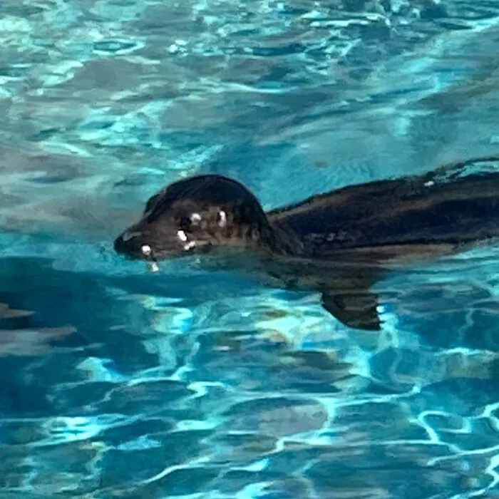
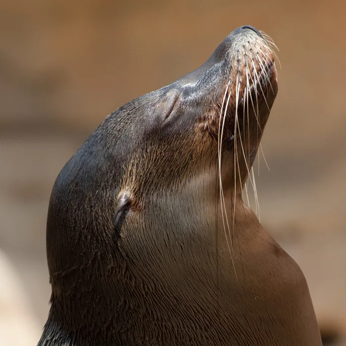
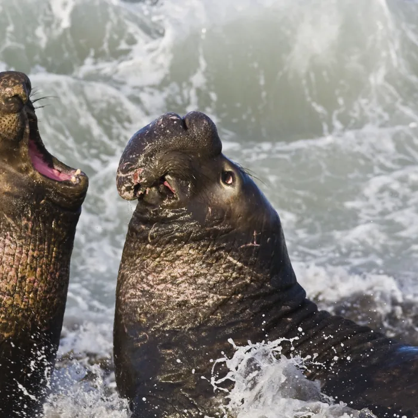
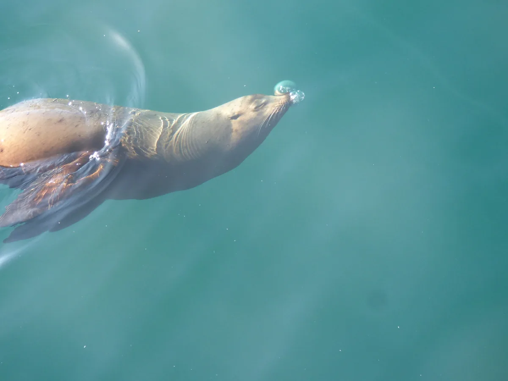

Un mundo de focas para descubrir
Conoce sus especies, su comportamiento y por qué merecen ser protegidas.

Focas comunes
Phoca vitulina
Las más extendidas del hemisferio norte. Prefieren costas rocosas y bahías tranquilas.
Más info
Lobos marinos
Otariidae
Se distinguen por sus orejas visibles y su habilidad para desplazarse en tierra.
Más info
Elefantes marinos
Mirounga
Los pinnípedos más grandes del mundo, reconocibles por su característica trompa.
Más infoConoce de cerca
Curiosidades sobre su comportamiento y su rol en el ecosistema marino.
Las focas pasan gran parte de su vida en el agua, pero necesitan la costa para descansar, reproducirse y criar a sus cachorros. Su presencia es un indicador clave de la salud de los ecosistemas costeros.
Más info
Novedades del sitio

La foca leopardo, una cazadora experta
Es una de las depredadoras más grandes de la Antártida, capaz de cazar pingüinos y otras focas.

Los primeros meses de un lobo fino
Las crías dependen de su madre durante casi un año antes de aprender a cazar solas.

Focas y pingüinos: vecinos de playa
En la Antártida comparten costa con distintas especies de pingüinos sin mayores conflictos.